vignettes/Differentially_expression_analysis.Rmd
Differentially_expression_analysis.RmdSpatial transcriptomics is a revolutionary technology that allows us
to measure gene expression while preserving the spatial context of cells
within tissues. Unlike traditional bulk or single-cell RNA sequencing,
spatial transcriptomics provides crucial information about where genes
are expressed in relation to tissue architecture, cell types, and
neighboring cells. This workshop demonstrates how to use the
jazzPanda package for spatially-aware marker gene detection
in spatial transcriptomics data.
jazzPanda is a specialized R package designed
specifically for spatial transcriptomics analysis. It addresses a key
limitation of traditional marker gene detection methods: they often
ignore the spatial organization of gene expression within tissues. By
incorporating spatial coordinates into the analysis, jazzPanda can
identify genes that not only differ between cell types but also exhibit
specific spatial patterns that may be biologically meaningful.
This comprehensive workshop will guide you through the complete jazzPanda workflow, from data preparation to result interpretation. We will:
This workshop uses spatial transcriptomics data from lung tissue samples (Lung5_Rep1 and Lung5_Rep3). The data has been preprocessed and subset to specific regions of interest to focus the analysis. The samples contain multiple cell types that have been clustered based on their gene expression profiles, and we’ll use jazzPanda to identify genes that exhibit spatial patterns correlated with these cell type clusters.
Important Note: This analysis uses only a subset of the full spatial transcriptomics dataset to demonstrate jazzPanda functionality. The results shown here are for educational purposes and demonstrate the potential of spatial transcriptomics analysis. For biological insights, the complete dataset should be analyzed with appropriate statistical power and biological validation.
# Set random seed for reproducibility
seed_number <- 899
set.seed(seed_number)
# Define consistent ggplot theme for spatial plots
defined_theme <- theme(
strip.text = element_text(size = rel(1)),
strip.background = element_rect(fill = NA, colour = "black"),
plot.title = element_text(size = 11),
axis.line = element_blank(),
axis.text.x = element_blank(),
axis.text.y = element_blank(),
axis.ticks = element_blank(),
axis.title.x = element_blank(),
axis.title.y = element_blank(),
legend.position = "none",
panel.background = element_blank(),
panel.border = element_blank(),
panel.grid.major = element_blank(),
panel.grid.minor = element_blank(),
plot.background = element_blank()
)
# Function to choose the number of hex bins from the number of points
auto_hex_bin <- function(n, target_points_per_bin = 1, min_bins=20, scale=5) {
k <- n / target_points_per_bin
bins <- round(k^(1/3) *5)
return(max(min_bins, bins))
}For the workshop demonstration, we selected a 10,000 × 10,000 region in each of two replicate sections from the same tumour: x = 10,000–20,000 and y = 155,000–165,000 in Lung5_Rep1, and x = −4,707–5,293 and y = 655–10,655 in Lung5_Rep3. The two regions cover different but partly overlapping parts of the tumour. All cells in these regions that pass quality control were clustered together using Seurat’s standard workflow (log-normalisation, PCA on all 960 genes and graph-based clustering at resolution 0.2), giving eight clusters, c1–c8.
In addition to the cells located within these regions, we also included the transcripts detected within the same regions. The code below shows how these data were prepared; it is not run during the workshop.
library(SpatialExperiment)
library(Seurat)
library(ExperimentHub)
# A 10,000 x 10,000 region in each replicate, starting at the given x and y
size <- 10000
regions <- list(Lung5_Rep1 = c(x = 10000, y = 155000),
Lung5_Rep3 = c(x = -4707, y = 655))
in_region <- function(x, y, r) {
x >= r[["x"]] & x < r[["x"]] + size & y >= r[["y"]] & y < r[["y"]] + size
}
# Transcripts detected in each region (CosMx NSCLC data from SubcellularSpatialData).
# The full table holds ~260 million transcripts and subsetting it needs ~38 GB of memory,
# so subset it first and free it before loading anything else.
eh <- ExperimentHub()
tx_detections <- eh[["EH8232"]]
keep_cols <- c("gene", "genetype", "x", "y")
r1_tx <- tx_detections[tx_detections$sample_id == "Lung5_Rep1" &
in_region(tx_detections$x, tx_detections$y, regions$Lung5_Rep1), keep_cols]
r3_tx <- tx_detections[tx_detections$sample_id == "Lung5_Rep3" &
in_region(tx_detections$x, tx_detections$y, regions$Lung5_Rep3), keep_cols]
rm(tx_detections)
gc()
# Cells in each region that pass QC
sub_se <- lapply(names(regions), function(s) {
se <- readRDS(paste0(s, ".rds"))
xy <- spatialCoords(se)
se[, in_region(xy[, "x"], xy[, "y"], regions[[s]]) & se$keep]
})
names(sub_se) <- names(regions)
# Cluster the cells of both regions together (standard Seurat workflow, all 960 genes)
seu <- CreateSeuratObject(counts = do.call(cbind, lapply(sub_se, counts)))
seu <- NormalizeData(seu)
VariableFeatures(seu) <- rownames(seu)
seu <- ScaleData(seu)
seu <- RunPCA(seu, npcs = 30, seed.use = 899)
seu <- FindNeighbors(seu, dims = 1:20)
seu <- FindClusters(seu, resolution = 0.2, random.seed = 899)
cluster <- paste0("c", as.integer(as.character(seu$seurat_clusters)) + 1)
names(cluster) <- colnames(seu)
for (s in names(sub_se)) {
sub_se[[s]]$cluster <- cluster[colnames(sub_se[[s]])]
colData(sub_se[[s]]) <- colData(sub_se[[s]])[, c("sample_id", "cell_id", "cluster")]
}
r1_sub_se <- sub_se$Lung5_Rep1
r3_sub_se <- sub_se$Lung5_Rep3
usethis::use_data(r1_sub_se, r3_sub_se, r1_tx, r3_tx, overwrite = TRUE)r1_sub_se,
r3_sub_se)
r1_tx, r3_tx)
r1_cells,
r3_cells)
# Load data
data(r1_sub_se)
data(r3_sub_se)
data(r1_tx)
data(r3_tx)
# Create cell information data frames
r1_cells = as.data.frame(cbind(
spatialCoords(r1_sub_se),
cell_id = paste0("Lung5_Rep1_", r1_sub_se$cell_id),
sample = r1_sub_se$sample_id,
cluster = r1_sub_se$cluster
))
r1_cells$x = as.numeric(r1_cells$x)
r1_cells$y = as.numeric(r1_cells$y)
r3_cells = as.data.frame(cbind(
spatialCoords(r3_sub_se),
cell_id = paste0("Lung5_Rep3_", r3_sub_se$cell_id),
sample = r3_sub_se$sample_id,
cluster = r3_sub_se$cluster
))
r3_cells$x = as.numeric(r3_cells$x)
r3_cells$y = as.numeric(r3_cells$y)
# Lung5_Rep1
cat("**Lung5_Rep1 cell counts by cluster:**\n\n")## **Lung5_Rep1 cell counts by cluster:**
r1_tab <- table(r1_cells$cluster)
max_name_len <- max(nchar(names(r1_tab)))
for (i in seq_along(r1_tab)) {
cat(sprintf(" - %-*s : %d\n", max_name_len, names(r1_tab)[i], r1_tab[i]))
}## - c1 : 6247
## - c2 : 2160
## - c3 : 2157
## - c4 : 2081
## - c5 : 1361
## - c6 : 592
## - c7 : 529
## - c8 : 311
cat("\n**Lung5_Rep3 cell counts by cluster:**\n\n")##
## **Lung5_Rep3 cell counts by cluster:**
r3_tab <- table(r3_cells$cluster)
max_name_len <- max(nchar(names(r3_tab)))
for (i in seq_along(r3_tab)) {
cat(sprintf(" - %-*s : %d\n", max_name_len, names(r3_tab)[i], r3_tab[i]))
}## - c1 : 5518
## - c2 : 2209
## - c3 : 1889
## - c4 : 1759
## - c5 : 1175
## - c6 : 703
## - c7 : 489
## - c8 : 277
# === Spatial Coverage Summary ===
r1_x <- round(range(r1_cells$x), 1)
r1_y <- round(range(r1_cells$y), 1)
r3_x <- round(range(r3_cells$x), 1)
r3_y <- round(range(r3_cells$y), 1)
cat("\n\n### Spatial Coverage Summary\n\n",
"Sample | X Range | Y Range\n",
"-------------|--------------------|-------------------\n",
sprintf("Lung5_Rep1 | %7.1f – %-7.1f | %7.1f – %-7.1f\n", r1_x[1], r1_x[2], r1_y[1], r1_y[2]),
sprintf("Lung5_Rep3 | %7.1f – %-7.1f | %7.1f – %-7.1f\n", r3_x[1], r3_x[2], r3_y[1], r3_y[2]))##
##
## ### Spatial Coverage Summary
##
## Sample | X Range | Y Range
## -------------|--------------------|-------------------
## Lung5_Rep1 | 10000.5 – 19999.1 | 155231.7 – 164999.5
## Lung5_Rep3 | -4706.8 – 5292.5 | 655.5 – 10654.8Before detecting marker genes, it is useful to see where each cluster sits in the region. The plots below show the cells of each cluster across the whole cropped region, which gives context for the spatial correlations and marker genes that follow.
# Spatial distribution plot
ggplot(data = r1_cells, aes(x = x, y = y, colour = cluster)) +
geom_point(size = 0.5) +
scale_colour_brewer(palette = "Dark2") +
facet_wrap(~cluster, ncol = 4) +
coord_fixed() +
theme_classic() +
theme(legend.position = "none") +
labs(title = "Spatial Distribution of Clusters - Lung5_Rep1 subset",
x = "X coordinate", y = "Y coordinate") +
theme(axis.text = element_text(size = 8),
axis.text.x = element_text(angle = 90, vjust = 0.5, hjust = 1),
strip.text = element_text(size = 10, face = "bold"),
plot.title = element_text(size = 14, face = "bold"),
plot.subtitle = element_text(size = 10))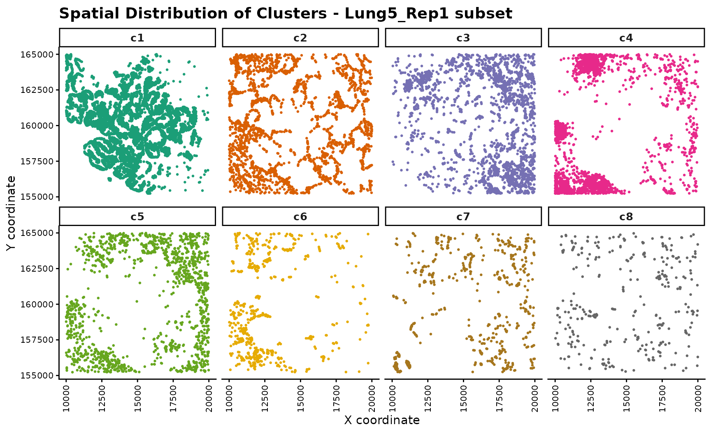
jazzPanda works by converting spatial transcriptomics data into spatial vectors - mathematical representations that capture how genes and cell types are distributed across tissue space. This is fundamentally different from traditional differential expression analysis, which ignores spatial information.
Spatial vectors are created and compared by:
This approach allows jazzPanda to identify genes whose spatial expression patterns correlate with the spatial distribution of specific cell types.
This section creates the fundamental data structure that jazzPanda uses for spatial-aware marker gene detection. Spatial vectors convert continuous spatial coordinates into discrete bins, allowing correlation analysis between gene expression patterns and cell type distributions.
KEY CONCEPTS:
# ============================================================================
# SPATIAL VECTOR GENERATION - CORE JAZZPANDA FUNCTIONALITY
# ============================================================================
# Define binning parameters
# - More bins (100x100): Higher spatial resolution, more noise, longer computation
# - Fewer bins (10x10): Lower resolution, more stable patterns, faster computation
grid_length <- 20 # Number of bins along each axis (a 20 x 20 grid)
# We only analyze actual genes, not control probes
genes <- unique(r1_tx[r1_tx$genetype == "Gene", "gene"])
r1_tx$feature_name <- r1_tx$gene
# Extract negative control probe names for background correction
# These will be used later to model technical noise and improve specificity
nc_names <- unique(r1_tx[r1_tx$genetype == "NegPrb", "gene"])
cat(
"Data preparation summary:\n",
"Number of genes to analyze:", length(genes), "\n",
"Number of negative control probes:", length(nc_names), "\n",
"Spatial grid:", grid_length, "x", grid_length, "bins\n"
)## Data preparation summary:
## Number of genes to analyze: 960
## Number of negative control probes: 20
## Spatial grid: 20 x 20 bins
# Generate spatial vectors for genes and clusters
# This is the core jazzPanda function that performs spatial binning:
# 1. Divides tissue into 20x20 square bins
# 2. Counts transcripts per bin for each gene
# 3. Counts cells per bin for each cluster
r1_sv <- get_vectors(
x = list("Lung5_Rep1" = r1_tx),
sample_names = "Lung5_Rep1",
cluster_info = r1_cells,
bin_type = "square", # Square bins for regular tissue regions
bin_param = c(grid_length, grid_length), # 20 x 20 grid of bins
test_genes = genes # Only analyze actual genes
)
# Generate spatial vectors for genes (from cells rather than transcripts) and clusters
# use the cell location and count matrix to create gene vectors
# This is useful when: Transcript coordinate data is not available
# IMPORTANT: For perfect alignment, always take both `cluster_mt` and `gene_mt`
# from the SAME `get_vectors()` call so they share the exact window/tiles and
# bin ordering.
# r1_sv_cm <- get_vectors(
# x = r1_sub_se,
# sample_names = "Lung5_Rep1",
# cluster_info = r1_cells,
# bin_type = "square", # Square bins for regular tissue regions
# bin_param = c(grid_length, grid_length), # 20 x 20 grid of bins
# test_genes = genes, # Only analyze actual genes
# use_cm=TRUE # # Use cell count matrix instead of transcript coordinates
# )
# ============================================================================
# INTERPRETATION OF SPATIAL VECTOR DIMENSIONS
# ============================================================================
cat("\n=== SPATIAL VECTOR DIMENSIONS ===\n",
"Gene matrix:", dim(r1_sv$gene_mt), "\n",
"Cluster matrix:", dim(r1_sv$cluster_mt), "\n") # spatial bins x clusters##
## === SPATIAL VECTOR DIMENSIONS ===
## Gene matrix: 400 960
## Cluster matrix: 400 8
# What these dimensions mean:
# - Gene matrix: Each column = one gene, each row = one spatial tile
# - Cluster matrix: Each column = one cluster, each row = one spatial tile
cat("\n=== SPATIAL BINNING SUMMARY ===\n",
"Total spatial tile created:", nrow(r1_sv$gene_mt), "\n",
"Average transcripts per tile per gene:", round(mean(colMeans(r1_sv$gene_mt)), 1),"\n",
"Average cells per tile per cluster:", round(mean(colMeans(r1_sv$cluster_mt)), 1), "\n")##
## === SPATIAL BINNING SUMMARY ===
## Total spatial tile created: 400
## Average transcripts per tile per gene: 19.2
## Average cells per tile per cluster: 4.8To see how the clusters are arranged relative to each other, we compute the spatial correlation between their binned cell counts. A high positive correlation means that two clusters tend to appear in the same spatial bins, while a strong negative correlation means that they tend to occupy different parts of the region.
If many clusters exhibit consistently high positive correlations, this may indicate that the data has been overclustered—i.e., multiple clusters are capturing the same underlying cell population. In such cases, it may be helpful to revisit the clustering resolution.
# ============================================================================
# CLUSTER-CLUSTER SPATIAL CORRELATION ANALYSIS
# ============================================================================
# Define cluster order for consistent visualization
cluster_names <- paste0("c", 1:8)
r1_sv$cluster_mt <- r1_sv$cluster_mt[, cluster_names]
# Calculate pairwise correlations between clusters
# This measures how similar the spatial distribution patterns are between clusters
cor_cluster_mt <- cor(r1_sv$cluster_mt, r1_sv$cluster_mt, method = "pearson")
# Create color palette for correlation heatmap
# Blue = negative correlation, Red = positive correlation, White = no correlation
col <- grDevices::colorRampPalette(c("#4477AA", "#77AADD",
"#FFFFFF", "#EE9988", "#BB4444"))
# Plot correlation heatmap
corrplot::corrplot(
cor_cluster_mt,
method = "color",
col = col(200),
diag = TRUE,
addCoef.col = "black",
type = "upper",
tl.col = "black",
tl.srt = 0,
mar = c(2, 2, 2, 2) ,
number.cex = 0.7,
tl.cex = 0.9,
cex.main = 0.9,
cl.cex=0.7,
title = "Cluster-Cluster Spatial Correlation"
)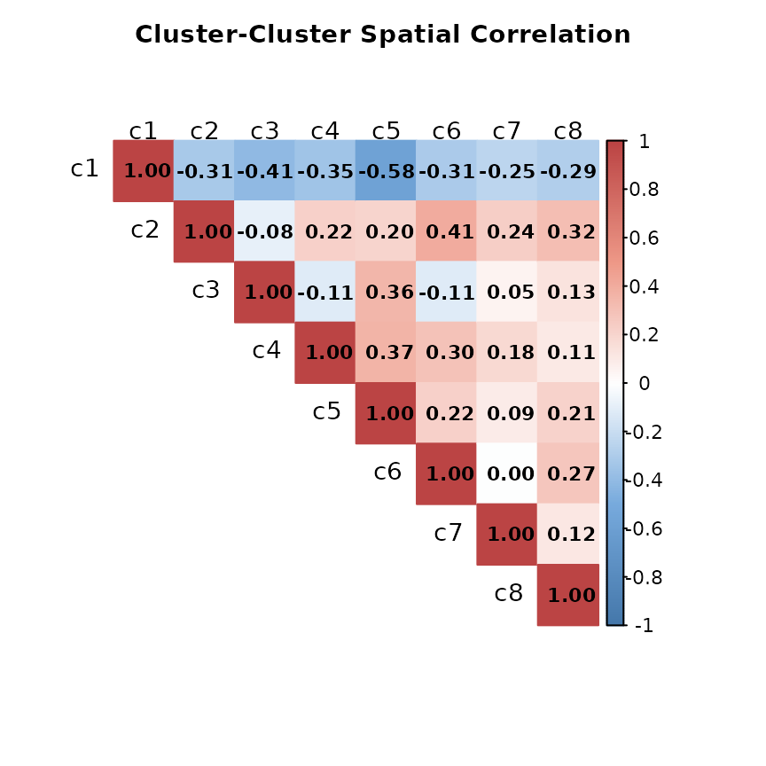
The heatmap shows how the clusters co-locate within this region. The largest cluster, c1, is negatively correlated with every other cluster (r = -0.25 to -0.58), most strongly with c5 (r = -0.58) and c3 (r = -0.41): c1 forms the large structure in the center of the region, while the other clusters sit around and between its nests. The strongest positive correlations are between c2 and c6 (r = 0.41), c4 and c5 (r = 0.37), and c3 and c5 (r = 0.36), so these clusters tend to appear in the same parts of the region.
Overall, the correlations between clusters are weak to moderate (none above 0.41), so no two clusters have closely matching spatial distributions. There is no sign of overclustering, which would show up as many strong positive correlations between clusters.
This analysis examines the spatial correlation between gene expression patterns and cluster distributions.
# ============================================================================
# CLUSTER-GENE SPATIAL CORRELATION ANALYSIS
# ============================================================================
#
# This analysis identifies genes whose spatial expression patterns correlate
# with the spatial distribution of specific cell type clusters. This is the
# foundation of jazzPanda's spatial-aware marker gene detection.
#
# KEY INSIGHTS:
# - High positive correlation: Gene is enriched in regions where cluster is abundant
# - High negative correlation: Gene is depleted in regions where cluster is abundant
# - Low correlation: Gene expression is independent of cluster distribution
#
# ============================================================================
# Calculate correlations between clusters and selected genes
# Each value represents the spatial correlation between a cluster and a gene
selected_genes <- c("IL7R", "COL4A2","GPNMB", "CXCL8", "FN1", "LAMP3",
"TM4SF1", "IGHG2", "TPSAB1", "MMP12")
cor_gc_mt <- cor(r1_sv$cluster_mt, r1_sv$gene_mt[,selected_genes],
method = "pearson")
# Set outer and inner margins to keep things compact but clean
# par(mar = c(1, 1, 3, 1)) # Bottom, Left, Top, Right
corrplot::corrplot(
cor_gc_mt,
method = "color",
col = col(200),
diag = TRUE,
addCoef.col = "black",
type = "full",
tl.col = "black",
tl.srt = 45,
mar = c(3,3,3,3),
number.cex = 0.7,
tl.cex = 0.9,
cl.cex=0.7,
title = "Cluster-Gene Spatial Correlation",
cex.main = 0.9
)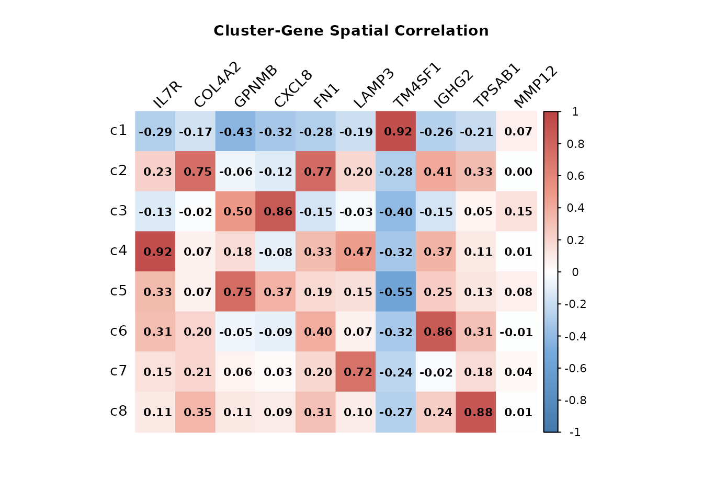
The correlation-based approach identifies genes whose spatial expression patterns correlate significantly with cluster distributions. We can use permutation testing to assess statistical significance.
# ============================================================================
# PERMUTATION TESTING FOR SPATIAL CORRELATION SIGNIFICANCE
# ============================================================================
# Set seed. Note: compute_permp() runs the permutations in separate R processes,
# which this seed does not control, so p-values can differ slightly between runs.
set.seed(seed_number)
cat("Starting permutation testing...\n",
"Number of permutations:", 1000, "\n",
"Number of genes tested:", length(genes), "\n",
"Number of clusters:", length(cluster_names), "\n")## Starting permutation testing...
## Number of permutations: 1000
## Number of genes tested: 960
## Number of clusters: 8
# Perform permutation testing for correlation-based marker detection
# This is computationally intensive but provides robust statistical significance
perm_p <- compute_permp(
x = list("Lung5_Rep1" = r1_tx),
cluster_info = r1_cells,
perm.size = 1000, # Number of permutations (more = more robust but slower)
bin_type = "square",
bin_param = c(grid_length, grid_length),
test_genes = genes,
correlation_method = "pearson",
n_cores = 1, # Increase for faster computation on multi-core systems
correction_method = "BH" # Benjamini-Hochberg correction for multiple testing
)
# Extract results
obs_corr <- get_cor(perm_p) # Observed correlations
perm_res <- as.matrix(get_perm_adjp(perm_p)) # BH-adjusted permutation p-values (FDR)
sig_counts <- colSums(perm_res < 0.05, na.rm = TRUE)
cat("Permutation testing completed.\n",
"Number of significant gene-cluster pairs (FDR < 0.05):\n")## Permutation testing completed.
## Number of significant gene-cluster pairs (FDR < 0.05):## c1: 377
## c2: 102
## c3: 26
## c4: 164
## c5: 55
## c6: 60
## c7: 43
## c8: 45This section analyzes the results of permutation testing to identify the most promising spatial marker genes. We examine both correlation strength and statistical significance to find genes with robust spatial patterns.
# ============================================================================
# EXAMINATION OF PERMUTATION TESTING RESULTS
# ============================================================================
# For each cluster, rank genes by FDR and then by |correlation|,
# and show the top 10 (thresholds are applied in the next chunk)
# ============================================================================
top_genes_per_cluster <- list()
for (cluster in cluster_names) {
pvals <- perm_res[, cluster]
corrs <- obs_corr[, cluster]
# Build dataframe per column
df <- data.frame(
gene = rownames(perm_res),
pval = pvals,
corr = corrs,
stringsAsFactors = FALSE
)
# Remove NA p-values
df <- df[!is.na(df$pval), ]
# Sort: smallest p-value → largest |corr|
df <- df[order(df$pval, -abs(df$corr)), ]
# Print table for this column
cat("\n=====================================\n")
cat("CLUSTER:", cluster, "\n")
cat("=====================================\n")
print.data.frame(head(df, 10))
# Store top 10 genes for heatmap
top_genes_per_cluster[[cluster]] <- head(df$gene, 10)
}##
## =====================================
## CLUSTER: c1
## =====================================
## gene pval corr
## EPCAM EPCAM 0.002664003 0.9372356
## KRT19 KRT19 0.002664003 0.9292204
## TM4SF1 TM4SF1 0.002664003 0.9225010
## ERBB3 ERBB3 0.002664003 0.9216978
## CDH1 CDH1 0.002664003 0.9204081
## S100A6 S100A6 0.002664003 0.9187159
## CEACAM6 CEACAM6 0.002664003 0.9177176
## DDR1 DDR1 0.002664003 0.9174769
## ANXA2 ANXA2 0.002664003 0.9160883
## SOX9 SOX9 0.002664003 0.9153766
##
## =====================================
## CLUSTER: c2
## =====================================
## gene pval corr
## BGN BGN 0.009687282 0.8281132
## IGFBP7 IGFBP7 0.009687282 0.7692423
## FN1 FN1 0.009687282 0.7677727
## CALD1 CALD1 0.009687282 0.7641049
## COL1A2 COL1A2 0.009687282 0.7520369
## COL4A2 COL4A2 0.009687282 0.7496881
## COL1A1 COL1A1 0.009687282 0.7481079
## MGP MGP 0.009687282 0.7449588
## COL4A1 COL4A1 0.009687282 0.7443429
## VIM VIM 0.009687282 0.7318449
##
## =====================================
## CLUSTER: c3
## =====================================
## gene pval corr
## CXCL8 CXCL8 0.03688619 0.8639374
## SRGN SRGN 0.03688619 0.5446355
## CSF3R CSF3R 0.03688619 0.5248125
## FCGR3A FCGR3A 0.03688619 0.5135780
## TLR2 TLR2 0.03688619 0.5105438
## C1QB C1QB 0.03688619 0.5044335
## GPNMB GPNMB 0.03688619 0.4987985
## CCL3L3 CCL3L3 0.03688619 0.4891193
## C1QA C1QA 0.03688619 0.4837800
## CCL3 CCL3 0.03688619 0.4807933
##
## =====================================
## CLUSTER: c4
## =====================================
## gene pval corr
## CD37 CD37 0.006949572 0.9346810
## PTPRC PTPRC 0.006949572 0.9342208
## IL16 IL16 0.006949572 0.9249148
## IL7R IL7R 0.006949572 0.9227099
## CD53 CD53 0.006949572 0.8995165
## PTPRCAP PTPRCAP 0.006949572 0.8945216
## CD2 CD2 0.006949572 0.8918282
## CD52 CD52 0.006949572 0.8889186
## SELL SELL 0.006949572 0.8793318
## NLRC5 NLRC5 0.006949572 0.8607657
##
## =====================================
## CLUSTER: c5
## =====================================
## gene pval corr
## CD163 CD163 0.01776002 0.8706039
## C1QA C1QA 0.01776002 0.8359899
## C1QC C1QC 0.01776002 0.8254769
## C1QB C1QB 0.01776002 0.8151873
## CD14 CD14 0.01776002 0.8063521
## HLA-DQA1 HLA-DQA1 0.01776002 0.7553658
## HLA-DPA1 HLA-DPA1 0.01776002 0.7530337
## GPNMB GPNMB 0.01776002 0.7518141
## TYROBP TYROBP 0.01776002 0.7485265
## HLA-DRA HLA-DRA 0.01776002 0.7296123
##
## =====================================
## CLUSTER: c6
## =====================================
## gene pval corr
## IGHG1 IGHG1 0.01880472 0.8655429
## IGHG2 IGHG2 0.01880472 0.8588298
## IGKC IGKC 0.01880472 0.8487338
## MZB1 MZB1 0.01880472 0.8420544
## IGHA1 IGHA1 0.01880472 0.7660533
## JCHAIN JCHAIN 0.01880472 0.7064236
## IGHM IGHM 0.01880472 0.5733568
## BGN BGN 0.01880472 0.5646316
## CD38 CD38 0.01880472 0.5632058
## LUM LUM 0.01880472 0.5510480
##
## =====================================
## CLUSTER: c7
## =====================================
## gene pval corr
## LTF LTF 0.02397602 0.7589099
## LAMP3 LAMP3 0.02397602 0.7233511
## CHI3L1 CHI3L1 0.02397602 0.6571361
## SERPINA1 SERPINA1 0.02397602 0.6528083
## AQP3 AQP3 0.02397602 0.6493974
## ICAM1 ICAM1 0.02397602 0.6373686
## CXCL14 CXCL14 0.02397602 0.5877909
## SOD2 SOD2 0.02397602 0.5338066
## CLU CLU 0.02397602 0.5219259
## MRC2 MRC2 0.02397602 0.5186331
##
## =====================================
## CLUSTER: c8
## =====================================
## gene pval corr
## TPSB2 TPSB2 0.02740117 0.8948369
## TPSAB1 TPSAB1 0.02740117 0.8834016
## CPA3 CPA3 0.02740117 0.8499672
## IL1RL1 IL1RL1 0.02740117 0.7434598
## KIT KIT 0.02740117 0.6794083
## PTGS1 PTGS1 0.02740117 0.4217820
## HPGDS HPGDS 0.02740117 0.3831495
## ITGA9 ITGA9 0.02740117 0.3738413
## COL4A1 COL4A1 0.02740117 0.3723666
## SPARCL1 SPARCL1 0.02740117 0.3653563
# ---- Extract all unique top genes across clusters ----
top_genes_all <- unique(unlist(top_genes_per_cluster))
# ---- Build heatmap matrix ----
heatmap_matrix <- obs_corr[top_genes_all, , drop = FALSE]
heatmap_matrix <- heatmap_matrix[, cluster_names, drop = FALSE]
# ---- Plot heatmap ----
pheatmap(
heatmap_matrix,
cluster_rows = TRUE,
cluster_cols = TRUE,
color = colorRampPalette(c("blue", "white", "red"))(100),
fontsize_row = 7,
angle_col = 0,
main = "Top 10 Spatially Correlated Genes per Cluster"
)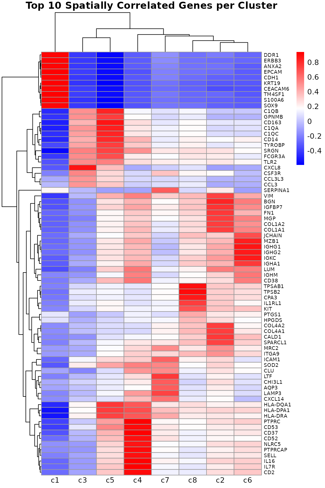
# ============================================================================
# INTEGRATED ANALYSIS: HIGH CORRELATION + SIGNIFICANCE
# ============================================================================
# Find genes that are both highly correlated and statistically significant
high_cor_threshold <- 0.7
sig_threshold <- 0.05
# For each cluster, find top markers
for (cl in cluster_names) {
cat("\n--- Top markers for cluster", cl, "---\n")
# Get correlations and p-values for this cluster
cl_cors <- obs_corr[, cl]
cl_pvals <- perm_res[, cl]
# Find genes meeting both criteria
high_cor_sig <- which(abs(cl_cors) > high_cor_threshold & cl_pvals < sig_threshold)
if (length(high_cor_sig) > 0) {
# Sort by absolute correlation
top_markers <- high_cor_sig[order(abs(cl_cors[high_cor_sig]), decreasing = TRUE)]
cat("Genes with |r| >", high_cor_threshold, "and FDR <", sig_threshold, ":\n")
for (i in 1:min(5, length(top_markers))) {
gene <- names(top_markers[i])
cor_val <- cl_cors[gene]
p_val <- cl_pvals[gene]
cat(" ", gene, ": r =", round(cor_val, 3), ", FDR =", round(p_val, 4), "\n")
}
} else {
cat("No genes meet both criteria. Relaxing thresholds...\n")
# Relaxed criteria
relaxed_cor <- 0.5
relaxed_sig <- 0.05
relaxed_markers <- which(abs(cl_cors) > relaxed_cor & cl_pvals < relaxed_sig)
if (length(relaxed_markers) > 0) {
top_relaxed <- relaxed_markers[order(abs(cl_cors[relaxed_markers]), decreasing = TRUE)]
cat("Genes with |r| >", relaxed_cor, "and FDR <", relaxed_sig, ":\n")
for (i in 1:min(3, length(top_relaxed))) {
gene <- names(top_relaxed[i])
cor_val <- cl_cors[gene]
p_val <- cl_pvals[gene]
cat(" ", gene, ": r =", round(cor_val, 3), ", FDR =", round(p_val, 4), "\n")
}
} else {
cat("No significant markers found even with relaxed criteria.\n")
}
}
}##
## --- Top markers for cluster c1 ---
## Genes with |r| > 0.7 and FDR < 0.05 :
## EPCAM : r = 0.937 , FDR = 0.0027
## KRT19 : r = 0.929 , FDR = 0.0027
## TM4SF1 : r = 0.923 , FDR = 0.0027
## ERBB3 : r = 0.922 , FDR = 0.0027
## CDH1 : r = 0.92 , FDR = 0.0027
##
## --- Top markers for cluster c2 ---
## Genes with |r| > 0.7 and FDR < 0.05 :
## BGN : r = 0.828 , FDR = 0.0097
## IGFBP7 : r = 0.769 , FDR = 0.0097
## FN1 : r = 0.768 , FDR = 0.0097
## CALD1 : r = 0.764 , FDR = 0.0097
## COL1A2 : r = 0.752 , FDR = 0.0097
##
## --- Top markers for cluster c3 ---
## Genes with |r| > 0.7 and FDR < 0.05 :
## CXCL8 : r = 0.864 , FDR = 0.0369
##
## --- Top markers for cluster c4 ---
## Genes with |r| > 0.7 and FDR < 0.05 :
## CD37 : r = 0.935 , FDR = 0.0069
## PTPRC : r = 0.934 , FDR = 0.0069
## IL16 : r = 0.925 , FDR = 0.0069
## IL7R : r = 0.923 , FDR = 0.0069
## CD53 : r = 0.9 , FDR = 0.0069
##
## --- Top markers for cluster c5 ---
## Genes with |r| > 0.7 and FDR < 0.05 :
## CD163 : r = 0.871 , FDR = 0.0178
## C1QA : r = 0.836 , FDR = 0.0178
## C1QC : r = 0.825 , FDR = 0.0178
## C1QB : r = 0.815 , FDR = 0.0178
## CD14 : r = 0.806 , FDR = 0.0178
##
## --- Top markers for cluster c6 ---
## Genes with |r| > 0.7 and FDR < 0.05 :
## IGHG1 : r = 0.866 , FDR = 0.0188
## IGHG2 : r = 0.859 , FDR = 0.0188
## IGKC : r = 0.849 , FDR = 0.0188
## MZB1 : r = 0.842 , FDR = 0.0188
## IGHA1 : r = 0.766 , FDR = 0.0188
##
## --- Top markers for cluster c7 ---
## Genes with |r| > 0.7 and FDR < 0.05 :
## LTF : r = 0.759 , FDR = 0.024
## LAMP3 : r = 0.723 , FDR = 0.024
##
## --- Top markers for cluster c8 ---
## Genes with |r| > 0.7 and FDR < 0.05 :
## TPSB2 : r = 0.895 , FDR = 0.0274
## TPSAB1 : r = 0.883 , FDR = 0.0274
## CPA3 : r = 0.85 , FDR = 0.0274
## IL1RL1 : r = 0.743 , FDR = 0.0274For most clusters, the top spatially correlated genes are well-known markers of a cell type, which is a useful check on the cluster labels:
Because this is a small cropped region, these correlations describe how genes and clusters co-locate within this window, not tissue-wide biology.
This section creates spatial plots showing the expression patterns of the top marker genes identified by the correlation approach.
# ============================================================================
# SPATIAL VISUALIZATION OF TOP MARKER GENES
# ============================================================================
# - Left panel: Spatial distribution of the target cluster
# - Right panels: Spatial expression patterns of top marker genes
# - Color intensity: Transcript density (darker = more transcripts)
# - Hexagonal bins: Smooth spatial representation of expression
# ============================================================================
permp_df <- as.data.frame(perm_p$perm.pval.adj)
permp_df$gene <- row.names(permp_df)
# Visualize top marker genes for each cluster
for (cl in cluster_names) {
# Get significant genes for this cluster
perm_sig <- permp_df[permp_df[, cl] < 0.05, ]
# Define correlation cutoff (alternative: 75th percentile)
# obs_cutoff <- quantile(obs_corr[, cl], 0.75)
# cat("Correlation cutoff (75th percentile):", round(obs_cutoff, 3), "\n")
obs_cutoff <-0.5
# Find genes that are both significant and have high correlation
perm_cl <- intersect(
row.names(perm_res[perm_res[, cl] < 0.05, ]),
row.names(obs_corr[obs_corr[, cl] > obs_cutoff, ])
)
if (length(perm_cl) > 0) {
# Get top 3 genes by correlation value
rounded_val <- signif(as.numeric(obs_corr[perm_cl, cl]), digits = 3)
inters_df <- as.data.frame(cbind(gene = perm_cl, value = rounded_val))
inters_df$value <- as.numeric(inters_df$value)
inters_df <- inters_df[order(inters_df$value, decreasing = TRUE), ]
inters_df <- inters_df[1:min(nrow(inters_df), 3), ]
inters_df$text <- paste(inters_df$gene, inters_df$value, sep = ": ")
# Prepare data for visualization
curr_genes <- r1_tx$feature_name %in% inters_df$gene
data_vis <- r1_tx[curr_genes, c("x", "y", "feature_name")]
data_vis$text <- inters_df[match(data_vis$feature_name, inters_df$gene), "text"]
data_vis$text <- factor(data_vis$text, levels = inters_df$text)
# Create hex bin plot for gene expression
gene_pt <- ggplot(data = data_vis, aes(x = x, y = y)) +
geom_hex(bins = auto_hex_bin(nrow(data_vis))) +
facet_wrap(~text) +
expand_limits(x = range(r1_cells$x), y = range(r1_cells$y)) +
coord_fixed() +
scale_fill_viridis_c(option = "plasma", trans = "sqrt", direction = -1) +
guides(fill = guide_colorbar(height = grid::unit(5, "cm"))) +
defined_theme +
theme(legend.position = "right", legend.title = element_blank()) +
labs(title = paste("Top marker genes for cluster", cl))
# Create cluster plot
cl_pt <- ggplot(data = r1_cells[r1_cells$cluster == cl, ],
aes(x = x, y = y, color = cluster)) +
geom_point(size = 0.2) +
facet_wrap(~cluster) +
expand_limits(x = range(r1_cells$x), y = range(r1_cells$y)) +
coord_fixed() +
scale_color_manual(values = "black") +
defined_theme +
labs(title = paste("Cluster", cl, "spatial distribution"))
# Add empty panels if fewer than 3 features to keep layout consistent
if (length(perm_cl) == 2) {
gene_pt <- (gene_pt | plot_spacer()) +
plot_layout(widths = c(2, 1))
} else if (length(perm_cl) == 1) {
gene_pt <- (gene_pt | plot_spacer() | plot_spacer()) +
plot_layout(widths = c(1, 1, 1))
}
lyt <- wrap_plots(cl_pt, ncol = 1) | gene_pt
layout_design <- lyt + patchwork::plot_layout(widths = c(1, 3))
print(layout_design)
}
}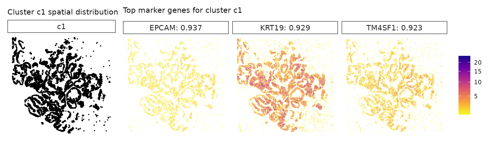
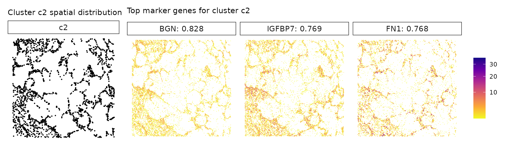
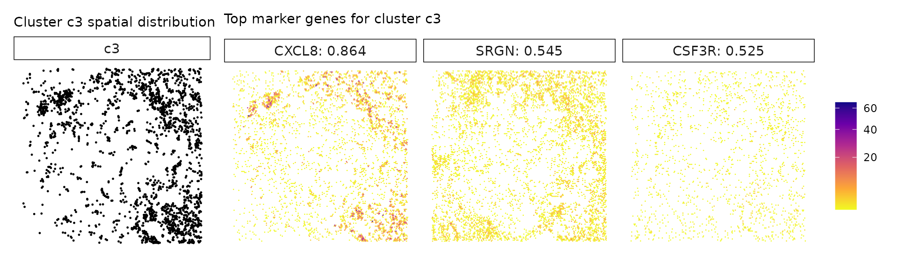
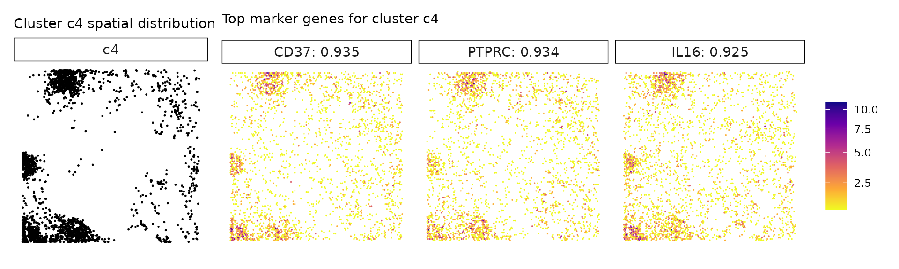
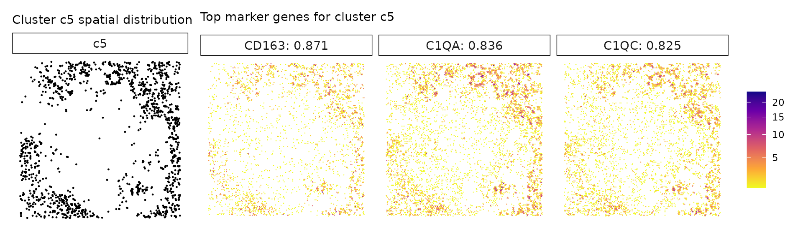
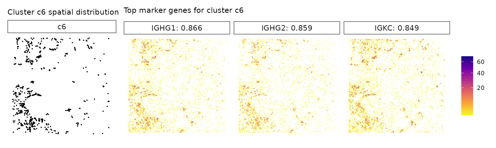
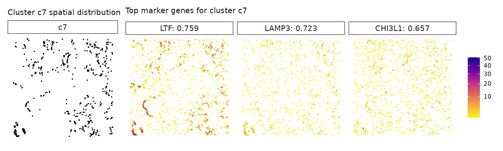
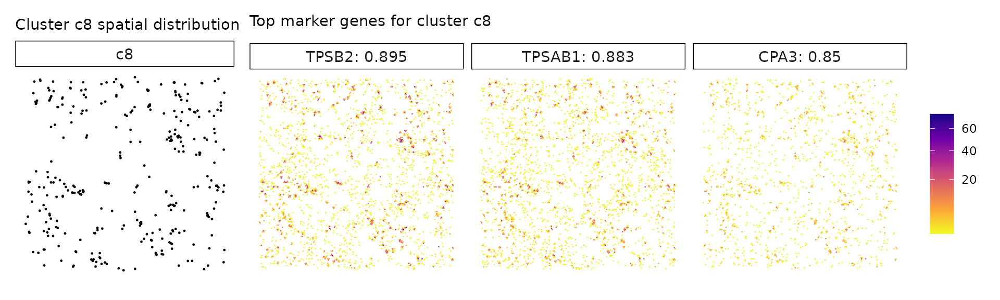
The linear modelling approach models each gene’s spatial vector as a combination of the cluster vectors, while accounting for background noise using negative control probes. Each gene’s top cluster is the cluster with the most significant positive coefficient; if the negative control probe term is more significant than every cluster, the gene is labelled NoSig.
# Extract negative control probe data
r1_nc_tx = r1_tx[r1_tx$gene %in% nc_names, ]
# Visualize spatial distribution of negative control probes
ggplot(data = r1_nc_tx, aes(x = x, y = y)) +
geom_point(size = 0.2) +
facet_wrap(~feature_name, ncol = 5) +
coord_fixed() +
theme_classic() +
defined_theme +
labs(title = "Spatial Distribution of Negative Control Probes")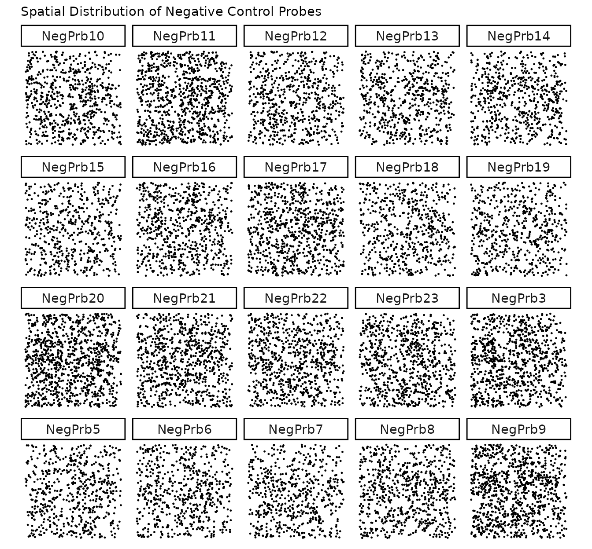
Note: Negative control probes should show random spatial distribution. If they show spatial patterns, this may indicate technical artifacts that need to be addressed.
# Create spatial vectors for negative control probes
r1_nc_vectors <- create_genesets(
x = list("Lung5_Rep1" = r1_nc_tx),
sample_names = "Lung5_Rep1",
name_lst = list(probe = nc_names),
bin_type = "square",
bin_param = c(grid_length, grid_length),
cluster_info = NULL
)
cat("Background vectors created with", length(nc_names), "negative control probes\n",
dim(r1_nc_vectors))## Background vectors created with 20 negative control probes
## 400 1The linear modelling approach used here first uses LASSO regression to select the clusters that best explain each gene’s spatial vector, then fits a linear model on the selected clusters, together with the background, to estimate their coefficients and p-values. This framework supports multi-sample designs and can incorporate background correction to account for spatial patterns unrelated to cell identity.
# ============================================================================
# Linear modelling FOR SPATIAL MARKER GENE DETECTION
# ============================================================================
# Set seed for reproducible results
set.seed(seed_number)
cat(" Number of genes:", ncol(r1_sv$gene_mt), "\n",
"Number of clusters:", ncol(r1_sv$cluster_mt), "\n",
"Number of spatial bins:", nrow(r1_sv$gene_mt), "\n",
"Background correction:", ifelse(!is.null(r1_nc_vectors),
"Enabled", "Disabled"), "\n")## Number of genes: 960
## Number of clusters: 8
## Number of spatial bins: 400
## Background correction: Enabled
# Perform linear model-based marker detection with background correction
r1_lasso_lst <- lasso_markers(
gene_mt = r1_sv$gene_mt,
cluster_mt = r1_sv$cluster_mt,
sample_names = c("Lung5_Rep1"),
keep_positive = TRUE, # Only keep positive coefficients (enrichment)
background = r1_nc_vectors # Include background correction
)
# Top result table
# coef_cutoff = 0.1: genes whose top coefficient is 0.1 or less are labelled NoSig
# This threshold can be adjusted based on your needs
r1_top <- get_top_mg(r1_lasso_lst, coef_cutoff = 0.1)
# Full result table
r1_full <- get_full_mg(r1_lasso_lst)
# Display top results
subset <- r1_top[r1_top$top_cluster == "c1", ]
top10 <- subset[order(-subset$glm_coef), ][1:10, ]
print(top10)## gene top_cluster glm_coef pearson max_gg_corr max_gc_corr
## KRT19 KRT19 c1 21.855377 0.9292204 0.9783053 0.9292204
## MZT2A MZT2A c1 19.928127 0.6103798 0.9087994 0.7731597
## S100A6 S100A6 c1 18.163965 0.9187159 0.9783053 0.9187159
## OLFM4 OLFM4 c1 12.553796 0.7846238 0.8787571 0.7846238
## DUSP5 DUSP5 c1 11.944505 0.5625981 0.8744609 0.7279071
## TYK2 TYK2 c1 9.848377 0.8100373 0.9246160 0.8100373
## CEACAM6 CEACAM6 c1 8.075810 0.9177176 0.9456171 0.9177176
## KRT17 KRT17 c1 7.882471 0.9136920 0.9772504 0.9136920
## KRT8 KRT8 c1 7.443733 0.8935563 0.9662221 0.8935563
## GSTP1 GSTP1 c1 7.307520 0.8619208 0.9492618 0.8619208
# Display full results
r1_full[r1_full$gene=="EPCAM", ]## gene cluster glm_coef p_value pearson max_gg_corr max_gc_corr
## 874 EPCAM c1 2.858501 7.738686e-85 0.9372356 0.9595961 0.9372356
## 875 EPCAM probe 0.661430 1.759491e-14 0.6393969 0.9595961 0.9372356
r1_full[r1_full$gene=="MZB1", ]## gene cluster glm_coef p_value pearson max_gg_corr max_gc_corr
## 1815 MZB1 c6 3.1229450 6.342656e-90 0.8420544 0.8133965 0.8420544
## 1816 MZB1 c4 0.1599952 1.289083e-09 0.4188162 0.8133965 0.8420544
for (cl in cluster_names) {
# Subset to top genes for this cluster
cluster_genes <- r1_top[r1_top$top_cluster == cl, ]
if (nrow(cluster_genes) == 0) {
cat("\n=== Cluster:", cl, "===\n",
" No marker genes found.\n")
next
}
# Ensure numeric types
cluster_genes$glm_coef <- as.numeric(cluster_genes$glm_coef)
cluster_genes$pearson <- as.numeric(cluster_genes$pearson)
# Sort by glm_coef
cluster_genes <- cluster_genes[order(cluster_genes$glm_coef, decreasing = TRUE), ]
# Take top 3 genes
top_genes <- head(cluster_genes, 3)
# Print nicely formatted output
cat("\n=== Cluster:", cl, "===\n")
for (i in 1:nrow(top_genes)) {
gene <- top_genes$gene[i]
coef <- signif(top_genes$glm_coef[i], 3)
corr <- signif(top_genes$pearson[i], 3)
cat(sprintf(" %d. %-10s | glm_coef: %-6s | corr: %-6s\n", i, gene, coef, corr))
}
}##
## === Cluster: c1 ===
## 1. KRT19 | glm_coef: 21.9 | corr: 0.929
## 2. MZT2A | glm_coef: 19.9 | corr: 0.61
## 3. S100A6 | glm_coef: 18.2 | corr: 0.919
##
## === Cluster: c2 ===
## 1. COL1A1 | glm_coef: 16 | corr: 0.748
## 2. FN1 | glm_coef: 9.4 | corr: 0.768
## 3. COL3A1 | glm_coef: 9.1 | corr: 0.629
##
## === Cluster: c3 ===
## 1. COL9A2 | glm_coef: 6.68 | corr: 0.183
## 2. CXCL8 | glm_coef: 6.62 | corr: 0.864
## 3. SRGN | glm_coef: 1.52 | corr: 0.545
##
## === Cluster: c4 ===
## 1. MALAT1 | glm_coef: 14.7 | corr: 0.429
## 2. HLA-B | glm_coef: 6.55 | corr: 0.829
## 3. CD74 | glm_coef: 6.51 | corr: 0.755
##
## === Cluster: c5 ===
## 1. PSAP | glm_coef: 14.7 | corr: 0.637
## 2. HLA-DRB1 | glm_coef: 9.81 | corr: 0.729
## 3. HLA-DPA1 | glm_coef: 7.86 | corr: 0.753
##
## === Cluster: c6 ===
## 1. IGHG1 | glm_coef: 31.5 | corr: 0.866
## 2. IGKC | glm_coef: 30.2 | corr: 0.849
## 3. IGHA1 | glm_coef: 26.6 | corr: 0.766
##
## === Cluster: c7 ===
## 1. LTF | glm_coef: 13.4 | corr: 0.759
## 2. SERPINA1 | glm_coef: 11.6 | corr: 0.653
## 3. DMBT1 | glm_coef: 5.92 | corr: 0.308
##
## === Cluster: c8 ===
## 1. TPSB2 | glm_coef: 29.5 | corr: 0.895
## 2. TPSAB1 | glm_coef: 20.8 | corr: 0.883
## 3. CPA3 | glm_coef: 7.74 | corr: 0.85The linear model largely agrees with the correlation approach:
Genes with large coefficients and high correlations are the most reliable markers; genes with a large coefficient but a weak correlation, such as COL9A2, are worth checking in the spatial plots below.
# ============================================================================
# SPATIAL VISUALIZATION OF TOP MARKER GENES
# ============================================================================
# - Left panel: Spatial distribution of the target cluster
# - Right panels: Spatial expression patterns of top marker genes
# - Color intensity: Transcript density (darker = more transcripts)
# - Hexagonal bins: Smooth spatial representation of expression
# ============================================================================
for (cl in cluster_names[cluster_names != "NoSig"]) {
# Get top genes for this cluster
inters <- r1_top[r1_top$top_cluster == cl, "gene"]
if (length(inters) > 0) {
# Get coefficient values
rounded_val <- signif(as.numeric(r1_top[inters, "glm_coef"]), digits = 3)
inters_df <- as.data.frame(cbind(gene = inters, value = rounded_val))
inters_df$value <- as.numeric(inters_df$value)
inters_df <- inters_df[order(inters_df$value, decreasing = TRUE), ]
inters_df$text <- paste(inters_df$gene, inters_df$value, sep = ": ")
# Select top 3 genes
inters_df <- inters_df[1:min(3, nrow(inters_df)), ]
inters <- inters_df$gene
# Prepare visualization data
vis_r1 <- r1_tx[r1_tx$feature_name %in% inters, c("x", "y", "feature_name")]
vis_r1$value <- inters_df[match(vis_r1$feature_name, inters_df$gene), "value"]
vis_r1$text_label <- paste(vis_r1$feature_name, vis_r1$value, sep = ": ")
vis_r1$text_label <- factor(vis_r1$text_label, levels = inters_df$text)
vis_r1$sample <- "Lung5_Rep1"
# Create hex bin plot
gene_pt <- ggplot(data = vis_r1, aes(x = x, y = y)) +
geom_hex(bins = auto_hex_bin(nrow(vis_r1))) +
facet_wrap(~text_label) +
expand_limits(x = range(r1_cells$x), y = range(r1_cells$y)) +
coord_fixed() +
scale_fill_viridis_c(option = "plasma", trans = "sqrt", direction = -1) +
guides(fill = guide_colorbar(height = grid::unit(5, "cm"))) +
defined_theme +
theme(legend.position = "right", legend.title = element_blank()) +
labs(title = paste("Top glm marker genes for cluster", cl))
# Create cluster plot
cl_pt <- ggplot(data = r1_cells[r1_cells$cluster == cl, ],
aes(x = x, y = y, color = cluster)) +
geom_point(size = 0.2) +
facet_wrap(~cluster) +
expand_limits(x = range(r1_cells$x), y = range(r1_cells$y)) +
coord_fixed() +
scale_color_manual(values = "black") +
defined_theme +
labs(title = paste("Cluster", cl, "spatial distribution"))
# Add empty panels if fewer than 3 features to keep layout consistent
if (length(inters) == 2) {
gene_pt <- (gene_pt | plot_spacer()) +
plot_layout(widths = c(2, 1))
} else if (length(inters) == 1) {
gene_pt <- (gene_pt | plot_spacer() | plot_spacer()) +
plot_layout(widths = c(1, 1, 1))
}
lyt <- wrap_plots(cl_pt, ncol = 1) | gene_pt
layout_design <- lyt + patchwork::plot_layout(widths = c(1, 3))
print(layout_design)
}
}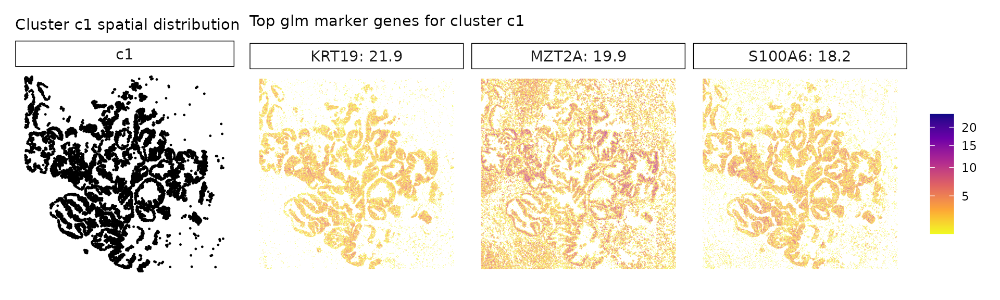
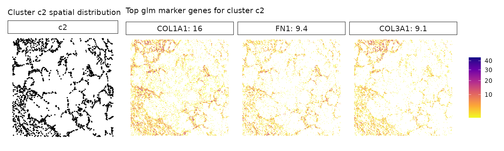
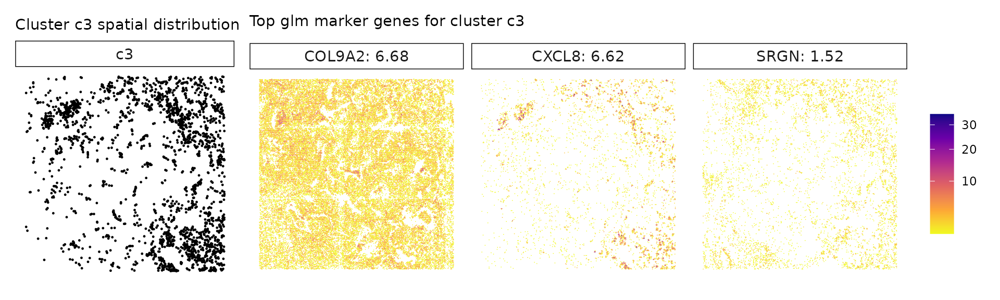
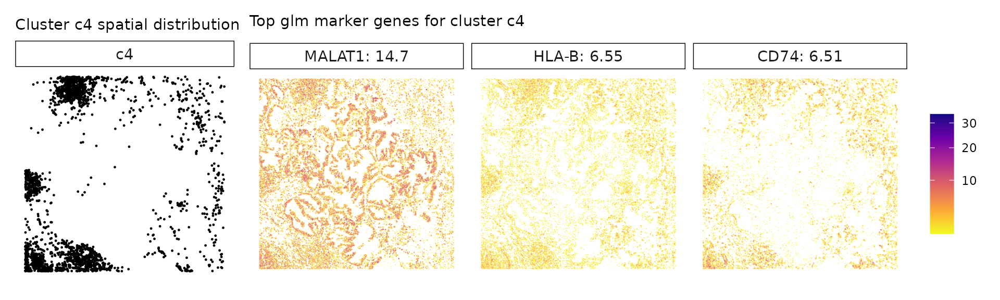
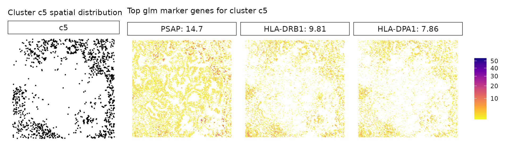
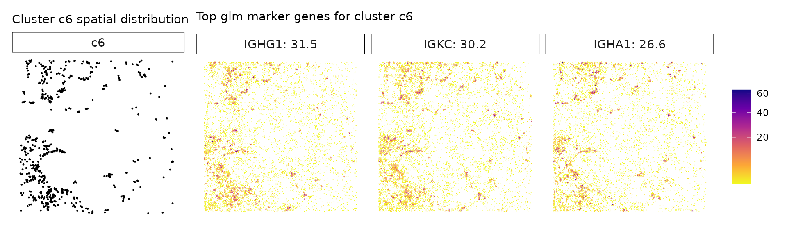
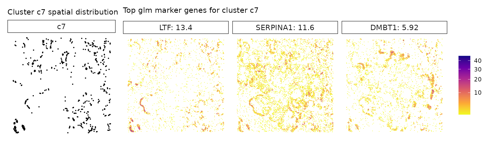
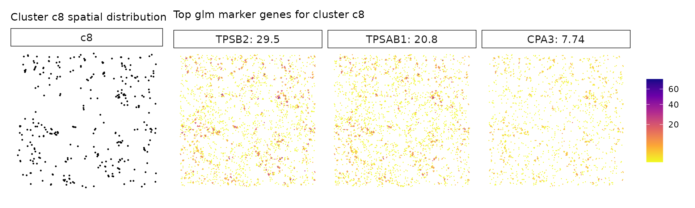
Let’s compare jazzPanda results with traditional differential expression analysis using Seurat’s FindMarkers function.
# Convert to Seurat object for FindMarkers analysis)
r1_seu <- as.Seurat(r1_sub_se, data = NULL)
# Set cluster identities
r1_seu$cluster = factor(r1_seu$cluster, levels = cluster_names)
Idents(r1_seu) = r1_seu$cluster
# Perform FindMarkers analysis
# This is the traditional approach that ignores spatial information
markers_fm <- FindAllMarkers(
r1_seu,
only.pos = TRUE, # Only positive markers
logfc.threshold = 0 # No minimum fold change threshold
)
# Organize results
markers_fm$cluster = factor(markers_fm$cluster, levels = cluster_names)
markers_fm = markers_fm[order(markers_fm$cluster,
markers_fm$p_val_adj, -markers_fm$avg_log2FC), ]
# Get top markers for each cluster
split_markers <- split(markers_fm, markers_fm$cluster)
top3_markers <- do.call(rbind, lapply(split_markers, function(df) {
df[order(df$p_val_adj, -df$avg_log2FC), ][1:5, ]
}))
# Create dot plots for comparison
p1<-DotPlot(r1_seu, features = unique(top3_markers$gene)) +
scale_colour_gradient(low = "white", high = "red") +
coord_flip() +
theme_minimal(base_size = 8) + # Slightly smaller base font
theme(
plot.margin = margin(5, 10, 5, 5), # Trim whitespace (top, right, bottom, left)
axis.text.x = element_text( hjust = 0.5, vjust = 1, size = 7),
axis.text.y = element_text(size = 7),
panel.grid = element_blank(),
axis.title = element_blank(),
legend.position = "right",
legend.key.size = unit(0.3, "cm"),
legend.text = element_text(size = 6),
plot.title = element_text(hjust = 0.5, face = "bold", size = 9, margin = margin(b = 6))
) +
labs(title = "Top 5 marker genes by FindMarkers", x = "", y = "")
# Prepare jazzPanda-correlation results for comparison
top3_perm_lst <- lapply(cluster_names, function(cluster) {
pvals <- perm_res[, cluster]
corrs <- obs_corr[, cluster]
# Combine and sort
df <- data.frame(
gene = rownames(perm_res),
pval = pvals,
corr = corrs
)
df <- df[!is.na(df$pval), ] # remove NA
df <- df[order(df$pval, -abs(df$corr)), ] # first by pval, then by abs(corr)
head(df$gene, 3)
})
names(top3_perm_lst) <- cluster_names
top3_perm <- unique(unlist(top3_perm_lst))
p2<-DotPlot(r1_seu, features = unique(top3_perm)) +
scale_colour_gradient(low = "white", high = "red") +
coord_flip() +
theme_minimal(base_size = 8) + # Slightly smaller base font
theme(
plot.margin = margin(5, 10, 5, 5), # Trim whitespace (top, right, bottom, left)
axis.text.x = element_text( hjust = 0.5, vjust = 1, size = 7),
axis.text.y = element_text(size = 7),
panel.grid = element_blank(),
axis.title = element_blank(),
legend.position = "right",
legend.key.size = unit(0.3, "cm"),
legend.text = element_text(size = 6),
plot.title = element_text(hjust = 0.5, face = "bold", size = 9, margin = margin(b = 6))
) +
labs(title = "Top 3 marker genes by jazzPanda-correlation", x = "", y = "")
# Prepare jazzPanda results for comparison
jazzPanda_top_r1 = r1_top[r1_top$top_cluster != "NoSig", ]
jazzPanda_top_r1$top_cluster = factor(jazzPanda_top_r1$top_cluster, levels = cluster_names)
top3_jazzPanda <- jazzPanda_top_r1 %>%
group_by(top_cluster) %>%
slice_max(order_by = glm_coef, n = 3, with_ties = FALSE)
p3<-DotPlot(r1_seu, features = unique(top3_jazzPanda$gene)) +
scale_colour_gradient(low = "white", high = "red") +
coord_flip() +
theme_minimal(base_size = 8) + # Slightly smaller base font
theme(
plot.margin = margin(5, 10, 5, 5), # Trim whitespace (top, right, bottom, left)
axis.text.x = element_text(angle = 0, hjust = 0.5, vjust = 1, size = 7),
axis.text.y = element_text(size = 7),
panel.grid = element_blank(),
axis.title = element_blank(),
legend.position = "right",
legend.key.size = unit(0.3, "cm"),
legend.text = element_text(size = 6),
plot.title = element_text(hjust = 0.5, face = "bold", size = 9, margin = margin(b = 6))
) +
labs(title = "Top 3 marker genes by jazzPanda-glm", x = "", y = "")
p1 | p2 | p3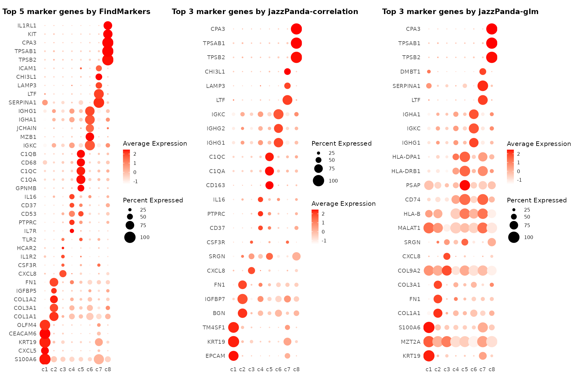
plt_lst = list()
for (cl in cluster_names){
findM_sig =markers_fm[markers_fm$cluster==cl,"gene"]
lasso_cl=r1_top[r1_top$top_cluster==cl, "gene"]
obs_cutoff = 0.5
perm_cl=intersect(row.names(perm_res[perm_res[,cl]<0.05,]),
row.names(obs_corr[obs_corr[, cl]>obs_cutoff,]))
df_mt =as.data.frame(matrix(FALSE,nrow=nrow(r1_top),ncol=3))
row.names(df_mt) =r1_top$gene
colnames(df_mt)=c("jazzPanda-glm", "jazzPanda-correlation",
"Wilcoxon Rank Sum Test")
df_mt[findM_sig,"Wilcoxon Rank Sum Test"] = TRUE
df_mt[lasso_cl,"jazzPanda-glm"] = TRUE
df_mt[perm_cl,"jazzPanda-correlation"] = TRUE
df_mt$gene_name =row.names(df_mt)
p<-upset(df_mt,
intersect=c("Wilcoxon Rank Sum Test", "jazzPanda-correlation","jazzPanda-glm"),
wrap=TRUE, keep_empty_groups= TRUE, name="",
themes=theme_grey(),
stripes=upset_stripes(geom=geom_segment(size=5),colors=c('grey95', 'grey95', 'grey95')),
sort_intersections_by ="cardinality", sort_sets= FALSE,min_degree=1,
set_sizes=FALSE,
sort_intersections= "descending", warn_when_converting=FALSE,
warn_when_dropping_groups=TRUE,encode_sets=TRUE,
matrix=(intersection_matrix()+
theme(axis.text.x=element_blank(),
panel.background = element_rect(fill="NA"),
axis.ticks = element_blank(),
axis.title = element_blank())),
base_annotations=list('Intersection size'=(intersection_size(bar_number_threshold=1,color='grey9',fill='grey80')+
scale_y_continuous(expand = expansion(mult = c(0, 0.15)))+
theme(axis.text.x = element_blank(),axis.title.x = element_blank(),
panel.background = element_rect(fill="NA"),
#plot.margin = margin(t = 10, r = 5, b = 5, l = 5),
panel.grid = element_line(color="grey90"),
axis.ticks.x = element_blank()))),
width_ratio=0.5, height_ratio=1/4)+
ggtitle(paste(cl,"cells"))
plt_lst[[cl]] = p
}
combined_plot <- wrap_plots(plt_lst, ncol = 3)
combined_plot 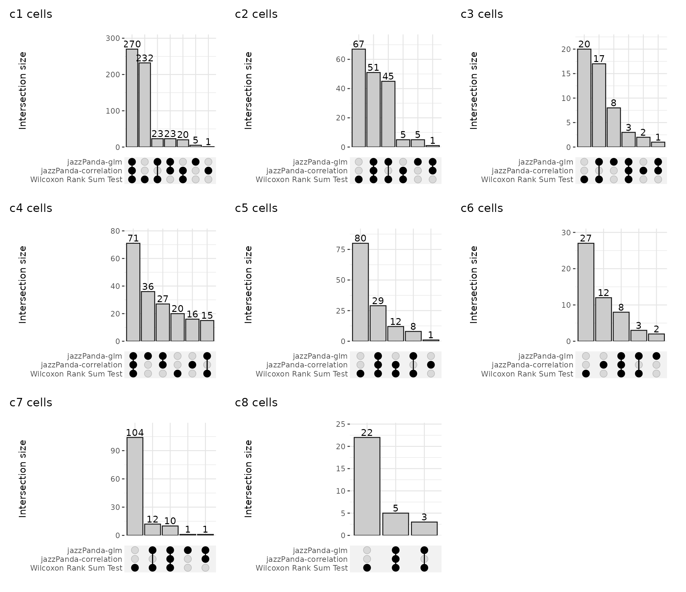
When multiple replicates are available, jazzPanda can leverage this information to identify more robust marker genes.
# Combine cell information from both replicates
cluster_info <- as.data.frame(rbind(r1_cells, r3_cells))
# Visualize spatial distribution across samples
# (both regions are 10,000 x 10,000, so square panels show them close to their true shape)
ggplot(data = cluster_info, aes(x = x, y = y, colour = cluster)) +
geom_point(size = 0.3) +
scale_colour_brewer(palette = "Dark2") +
facet_wrap(~sample, ncol = 2, scales = "free") +
guides(colour = guide_legend(override.aes = list(shape = 15, size = 5))) +
labs(title = "Spatial Distribution by Sample and Cluster") +
theme_classic() +
theme(aspect.ratio = 1)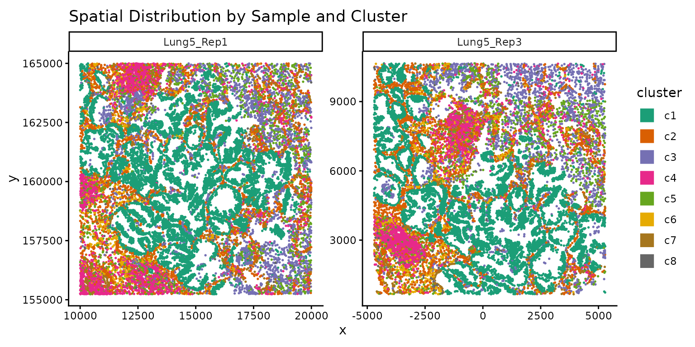
Both regions contain all eight clusters in similar numbers, but the clusters are arranged differently in the two regions.
# Prepare transcript data for multi-sample analysis
r3_tx$feature_name <- r3_tx$gene
# Generate spatial vectors for multiple samples
multi_sample_sv <- get_vectors(
x = list(Lung5_Rep1 = r1_tx, Lung5_Rep3 = r3_tx),
sample_names = c("Lung5_Rep1", "Lung5_Rep3"),
cluster_info = cluster_info,
bin_type = "square",
bin_param = c(grid_length, grid_length),
test_genes = genes
)
# Prepare negative control data for multi-sample analysis
r3_nc_tx <- r3_tx[r3_tx$gene %in% nc_names, ]
multi_sample_nc <- create_genesets(
x = list(Lung5_Rep1 = r1_nc_tx, Lung5_Rep3 = r3_nc_tx),
sample_names = c("Lung5_Rep1", "Lung5_Rep3"),
name_lst = list(probe = nc_names),
bin_type = "square",
bin_param = c(grid_length, grid_length),
cluster_info = NULL
)
# Each sample contributes 400 bins (rows); the cluster matrix has one column per
# cluster plus one indicator column per sample
cat("Multi-sample spatial vectors created.\n",
"Gene matrix dimensions:", dim(multi_sample_sv$gene_mt), "\n",
"Cluster matrix dimensions:", dim(multi_sample_sv$cluster_mt), "\n")## Multi-sample spatial vectors created.
## Gene matrix dimensions: 800 960
## Cluster matrix dimensions: 800 10
# Set seed for reproducible results
set.seed(seed_number)
# Perform multi-sample linear modelling
multi_sample_lasso <- lasso_markers(gene_mt = multi_sample_sv$gene_mt,
cluster_mt = multi_sample_sv$cluster_mt,
sample_names = c("Lung5_Rep1", "Lung5_Rep3"),
keep_positive = TRUE,
background = multi_sample_nc)
# Extract top results
multi_sample_top <- get_top_mg(multi_sample_lasso, coef_cutoff = 0.1)
# Extract full results
multi_sample_full <- get_full_mg(multi_sample_lasso)
# Display top results
subset <- multi_sample_top[multi_sample_top$top_cluster == "c1", ]
top10 <- subset[order(-subset$glm_coef), ][1:10, ]
print(top10)## gene top_cluster glm_coef pearson max_gg_corr max_gc_corr
## S100A6 S100A6 c1 15.646722 0.9042583 0.9662460 0.9042583
## OLFM4 OLFM4 c1 14.160812 0.7966150 0.8456121 0.7966150
## KRT19 KRT19 c1 12.961407 0.8981098 0.9734147 0.8981098
## CEACAM6 CEACAM6 c1 6.827439 0.9086935 0.9427661 0.9086935
## KRT8 KRT8 c1 5.936319 0.8597295 0.9477702 0.8597295
## GSTP1 GSTP1 c1 5.425996 0.8303342 0.9414663 0.8303342
## TM4SF1 TM4SF1 c1 5.372502 0.8967281 0.9490125 0.8967281
## LYZ LYZ c1 5.126487 0.7493935 0.8889597 0.7493935
## ANXA2 ANXA2 c1 4.997542 0.8859584 0.9500483 0.8859584
## NEAT1 NEAT1 c1 4.718801 0.6318945 0.8106689 0.6511194
for (cl in cluster_names) {
# Subset to top genes for this cluster
cluster_genes <- multi_sample_top[multi_sample_top$top_cluster == cl, ]
if (nrow(cluster_genes) == 0) {
cat("\n=== Cluster:", cl, "===\n",
" No marker genes found.\n")
next
}
# Ensure numeric types
cluster_genes$glm_coef <- as.numeric(cluster_genes$glm_coef)
cluster_genes$pearson <- as.numeric(cluster_genes$pearson)
# Sort by glm_coef
cluster_genes <- cluster_genes[order(cluster_genes$glm_coef, decreasing = TRUE), ]
# Take top 3 genes
top_genes <- head(cluster_genes, 3)
# Print nicely formatted output
cat("\n=== Cluster:", cl, "===\n")
for (i in 1:nrow(top_genes)) {
gene <- top_genes$gene[i]
coef <- signif(top_genes$glm_coef[i], 3)
corr <- signif(top_genes$pearson[i], 3)
cat(sprintf(" %d. %-10s | glm_coef: %-6s | corr: %-6s\n", i, gene, coef, corr))
}
}##
## === Cluster: c1 ===
## 1. S100A6 | glm_coef: 15.6 | corr: 0.904
## 2. OLFM4 | glm_coef: 14.2 | corr: 0.797
## 3. KRT19 | glm_coef: 13 | corr: 0.898
##
## === Cluster: c2 ===
## 1. COL1A1 | glm_coef: 12.6 | corr: 0.72
## 2. IGFBP7 | glm_coef: 9.4 | corr: 0.768
## 3. COL3A1 | glm_coef: 8.86 | corr: 0.68
##
## === Cluster: c3 ===
## 1. CXCL8 | glm_coef: 6.74 | corr: 0.85
## 2. IL1R2 | glm_coef: 0.585 | corr: 0.296
## 3. CCL3 | glm_coef: 0.404 | corr: 0.487
##
## === Cluster: c4 ===
## 1. MALAT1 | glm_coef: 12.5 | corr: 0.386
## 2. HLA-B | glm_coef: 5.43 | corr: 0.741
## 3. CD74 | glm_coef: 5.3 | corr: 0.712
##
## === Cluster: c5 ===
## 1. PSAP | glm_coef: 11.4 | corr: 0.555
## 2. C1QA | glm_coef: 5.55 | corr: 0.715
## 3. HLA-DRA | glm_coef: 5.19 | corr: 0.731
##
## === Cluster: c6 ===
## 1. IGHG1 | glm_coef: 30 | corr: 0.863
## 2. IGKC | glm_coef: 22 | corr: 0.785
## 3. IGHA1 | glm_coef: 20 | corr: 0.717
##
## === Cluster: c7 ===
## 1. LTF | glm_coef: 10.5 | corr: 0.733
## 2. SERPINA1 | glm_coef: 9.18 | corr: 0.586
## 3. DMBT1 | glm_coef: 4.69 | corr: 0.302
##
## === Cluster: c8 ===
## 1. TPSB2 | glm_coef: 26.9 | corr: 0.882
## 2. TPSAB1 | glm_coef: 21.1 | corr: 0.886
## 3. CPA3 | glm_coef: 7.52 | corr: 0.836
# Display full results
multi_sample_full[multi_sample_full$gene=="EPCAM", ]## gene cluster glm_coef p_value pearson max_gg_corr max_gc_corr
## 984 EPCAM c1 2.2908724 1.072647e-103 0.8929157 0.9519346 0.8929157
## 985 EPCAM probe 0.8559243 6.221358e-29 0.6294966 0.9519346 0.8929157
multi_sample_full[multi_sample_full$gene=="MZB1", ]## gene cluster glm_coef p_value pearson max_gg_corr max_gc_corr
## 2045 MZB1 c6 2.4395999 3.066182e-138 0.7906779 0.8243724 0.7906779
## 2046 MZB1 c4 0.1275444 8.554825e-11 0.3786862 0.8243724 0.7906779
## 2047 MZB1 probe 0.1068015 1.790659e-08 0.1880095 0.8243724 0.7906779With both replicates, most of the top markers are the same as in the single-sample analysis:
Markers with large coefficients that are found in both the single-sample and multi-sample analyses, such as KRT19, COL1A1, CXCL8, IGHG1 and TPSB2, are the most robust. Markers with small coefficients, or found in only one analysis (such as MZT2A and COL9A2), should be treated with caution.
# ============================================================================
# SPATIAL VISUALIZATION OF TOP MARKER GENES
# ============================================================================
# - Left panel: Spatial distribution of the target cluster
# - Right panels: Spatial expression patterns of top marker genes
# - Color intensity: Transcript density (darker = more transcripts)
# - Hexagonal bins: Smooth spatial representation of expression
# ============================================================================
for (cl in cluster_names) {
# Get top genes for this cluster
inters <- multi_sample_top[multi_sample_top$top_cluster == cl, "gene"]
if (length(inters) > 0) {
# Get coefficient values
rounded_val <- signif(as.numeric(multi_sample_top[inters, "glm_coef"]), digits = 3)
inters_df <- as.data.frame(cbind(gene = inters, value = rounded_val))
inters_df$value <- as.numeric(inters_df$value)
inters_df <- inters_df[order(inters_df$value, decreasing = TRUE), ]
inters_df$text <- paste(inters_df$gene, inters_df$value, sep = ": ")
# Select top 3 genes
inters_df <- inters_df[1:min(3, nrow(inters_df)), ]
inters <- inters_df$gene
# Prepare data for Lung5_Rep1
iters_rep1 <- r1_tx$feature_name %in% inters
vis_r1 <- r1_tx[iters_rep1, c("x", "y", "feature_name")]
vis_r1$value <- inters_df[match(vis_r1$feature_name, inters_df$gene), "value"]
vis_r1$text_label <- paste(vis_r1$feature_name, vis_r1$value, sep = ": ")
vis_r1$text_label <- factor(vis_r1$text_label, levels = inters_df$text)
vis_r1$sample <- "Lung5_Rep1"
# Prepare data for Lung5_Rep3
iters_rep3 <- r3_tx$feature_name %in% inters
vis_r3 <- r3_tx[iters_rep3, c("x", "y", "feature_name")]
vis_r3$value <- inters_df[match(vis_r3$feature_name, inters_df$gene), "value"]
vis_r3$text_label <- paste(vis_r3$feature_name, vis_r3$value, sep = ": ")
vis_r3$text_label <- factor(vis_r3$text_label, levels = inters_df$text)
vis_r3$sample <- "Lung5_Rep3"
# Create plots for each sample
p1 <- ggplot(data = vis_r1, aes(x = x, y = y)) +
geom_hex(bins = auto_hex_bin(nrow(vis_r1))) +
facet_wrap(~text_label) +
expand_limits(x = range(r1_cells$x), y = range(r1_cells$y)) +
coord_fixed() +
scale_fill_viridis_c(option = "plasma", trans = "sqrt", direction = -1) +
guides(fill = guide_colorbar(height = grid::unit(5, "cm"))) +
defined_theme +
theme(legend.position = "right", legend.title = element_blank())
p2 <- ggplot(data = vis_r3, aes(x = x, y = y)) +
geom_hex(bins = auto_hex_bin(nrow(vis_r3))) +
facet_wrap(~text_label) +
expand_limits(x = range(r3_cells$x), y = range(r3_cells$y)) +
coord_fixed() +
scale_fill_viridis_c(option = "plasma", trans = "sqrt", direction = -1) +
guides(fill = guide_colorbar(height = grid::unit(5, "cm"))) +
defined_theme +
theme(legend.position = "right", legend.title = element_blank())
# Create cluster plot
cl_pt <- ggplot(data = cluster_info[cluster_info$cluster == cl, ],
aes(x = x, y = y, color = cluster)) +
geom_point(size = 0.1) +
# show each sample's whole region; both are 10,000 x 10,000, so panels are square
geom_blank(data = cluster_info, aes(x = x, y = y), inherit.aes = FALSE) +
facet_wrap(~sample, ncol = 1, scales = "free") +
scale_color_manual(values = "black") +
defined_theme +
theme(aspect.ratio = 1) +
labs(title = paste("Cluster", cl, "spatial distribution"))
# Combine plots
stacked_panel = (p1 / p2)
# Add empty panels if fewer than 3 features to keep layout consistent
if (length(inters) == 2) {
stacked_panel <- (stacked_panel | plot_spacer()) +
plot_layout(widths = c(2, 1))
} else if (length(inters) == 1) {
stacked_panel <- (stacked_panel | plot_spacer() | plot_spacer()) +
plot_layout(widths = c(1, 1, 1))
}
lyt <- wrap_plots(cl_pt, ncol = 1) | stacked_panel
layout_design <- lyt + patchwork::plot_layout(widths = c(1, 3))
print(layout_design)
}
}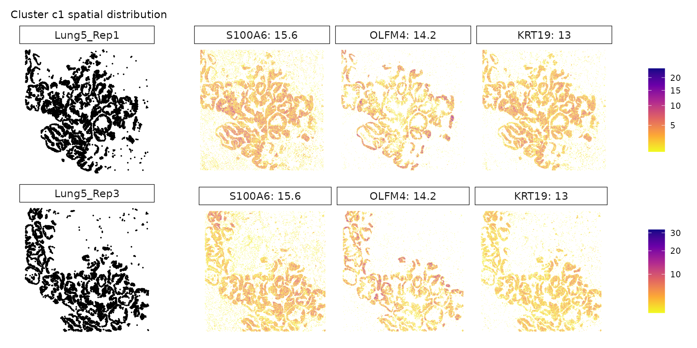
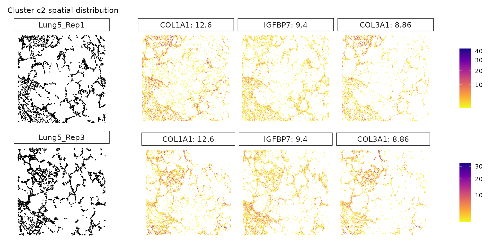
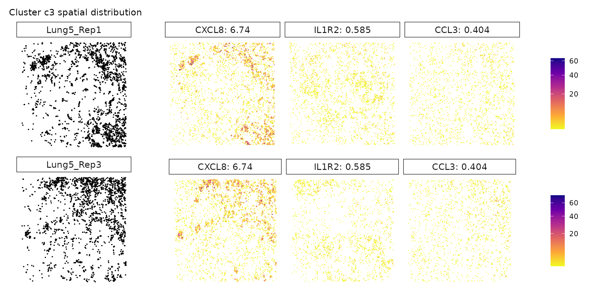
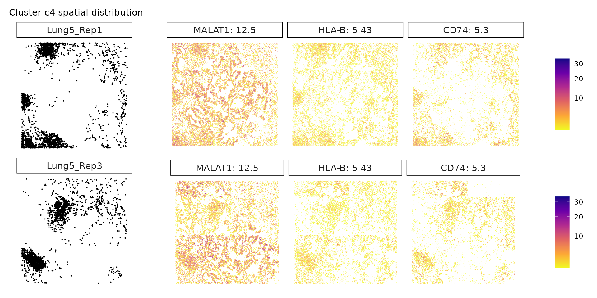
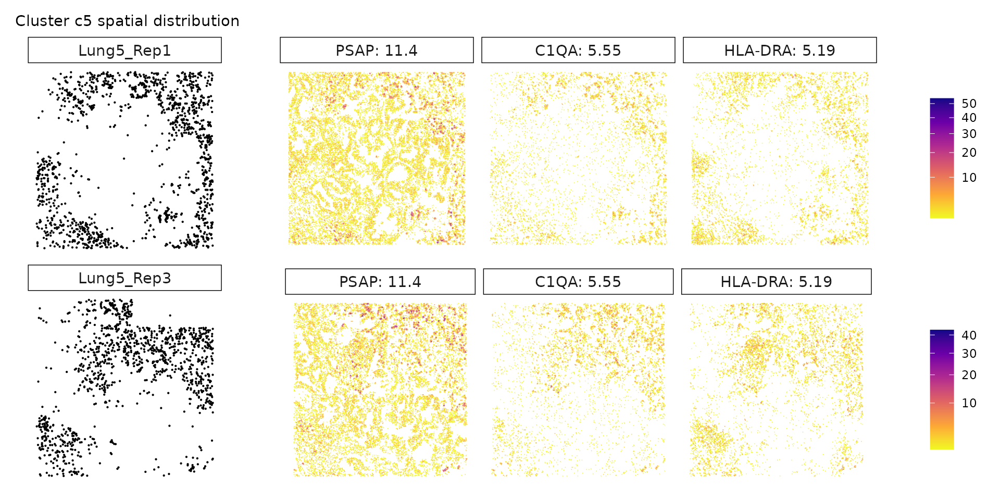
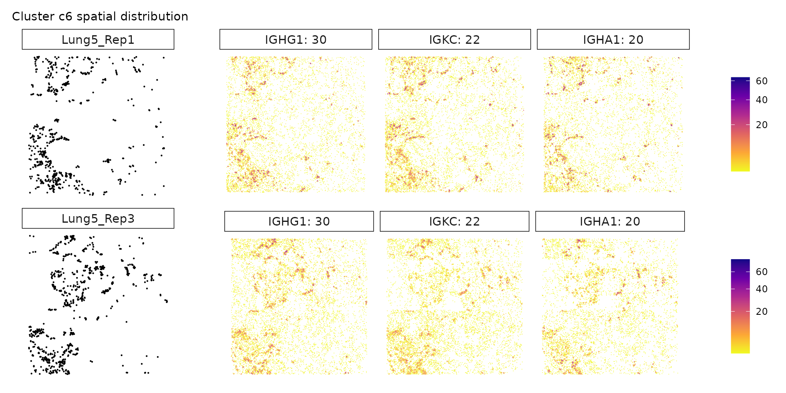
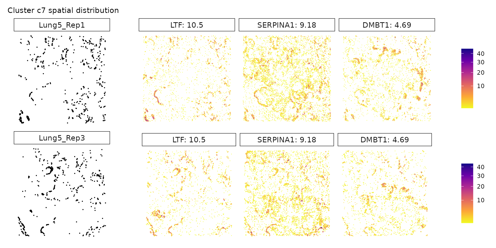
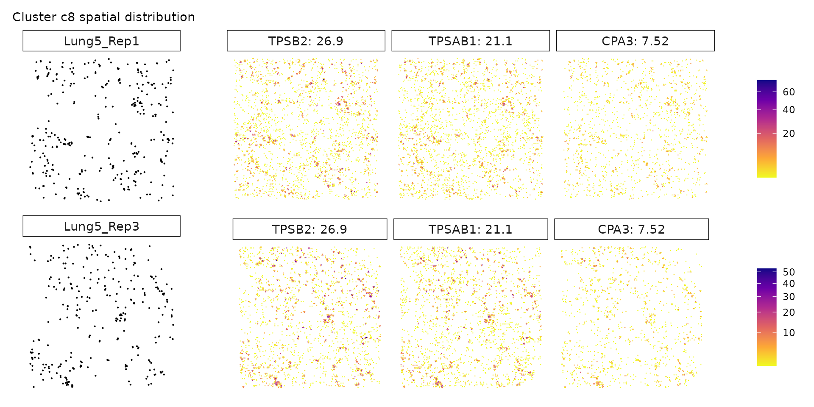
This workshop showcased how jazzPanda can be used to detect spatially-informed marker genes in spatial transcriptomics data, complementing standard tools like FindMarkers.
Spatial context jazzPanda uses where transcripts and cells are located, information that non-spatial methods such as FindMarkers ignore.
Two analysis modes
Background correction
Incorporating negative control probes improves marker specificity by
reducing background noise.
Robustness across replicates
The linear modeling framework in jazzPanda enables consistent detection
of spatial markers across replicates.
jazzPanda complements standard marker gene detection by incorporating spatial context. Because this workshop uses small cropped regions, the markers found here illustrate the workflow rather than tissue-wide biology; biological conclusions need the full dataset and further validation.
## R version 4.6.2 (2026-10-29)
## Platform: x86_64-pc-linux-gnu
## Running under: Ubuntu 24.04.5 LTS
##
## Matrix products: default
## BLAS: /usr/lib/x86_64-linux-gnu/openblas-pthread/libblas.so.3
## LAPACK: /usr/lib/x86_64-linux-gnu/openblas-pthread/libopenblasp-r0.3.26.so; LAPACK version 3.12.0
##
## locale:
## [1] LC_CTYPE=C.UTF-8 LC_NUMERIC=C LC_TIME=C.UTF-8
## [4] LC_COLLATE=C.UTF-8 LC_MONETARY=C.UTF-8 LC_MESSAGES=C.UTF-8
## [7] LC_PAPER=C.UTF-8 LC_NAME=C LC_ADDRESS=C
## [10] LC_TELEPHONE=C LC_MEASUREMENT=C.UTF-8 LC_IDENTIFICATION=C
##
## time zone: UTC
## tzcode source: system (glibc)
##
## attached base packages:
## [1] stats4 stats graphics grDevices utils datasets methods
## [8] base
##
## other attached packages:
## [1] ComplexUpset_1.3.3 dplyr_1.2.1
## [3] Seurat_5.6.0 SeuratObject_5.4.0
## [5] sp_2.2-4 pheatmap_1.0.13
## [7] jazzPanda_1.4.0 CosMxSpatialAnalysisWorkshop_1.0.0
## [9] corrplot_0.95 SpatialExperiment_1.22.0
## [11] SingleCellExperiment_1.34.0 SummarizedExperiment_1.42.0
## [13] Biobase_2.72.0 GenomicRanges_1.64.0
## [15] Seqinfo_1.2.0 IRanges_2.46.0
## [17] S4Vectors_0.50.3 BiocGenerics_0.58.1
## [19] generics_0.1.4 MatrixGenerics_1.24.0
## [21] matrixStats_1.5.0 patchwork_1.3.2
## [23] ggplot2_4.0.3
##
## loaded via a namespace (and not attached):
## [1] RcppAnnoy_0.0.23 splines_4.6.2 later_1.4.8
## [4] tibble_3.3.1 polyclip_1.10-7 hardhat_1.4.3
## [7] pROC_1.19.1 rpart_4.1.27 fastDummies_1.7.6
## [10] lifecycle_1.0.5 doParallel_1.0.17 globals_0.20.0
## [13] lattice_0.23-1 MASS_7.3-66 magrittr_2.0.5
## [16] limma_3.68.5 plotly_4.12.1 sass_0.4.10
## [19] rmarkdown_2.32 jquerylib_0.1.4 yaml_2.3.12
## [22] httpuv_1.6.17 otel_0.2.0 sctransform_0.4.3
## [25] spam_2.11-4 spatstat.sparse_3.2-0 reticulate_1.47.0
## [28] cowplot_1.2.0 pbapply_1.7-5 RColorBrewer_1.1-3
## [31] lubridate_1.9.5 abind_1.4-8 Rtsne_0.17
## [34] purrr_1.2.2 BumpyMatrix_1.20.0 nnet_7.3-21
## [37] ipred_0.9-16 lava_1.10 ggrepel_0.9.8
## [40] irlba_2.4.1 listenv_1.1.0 spatstat.utils_3.2-5
## [43] goftest_1.2-3 RSpectra_0.16-2 spatstat.random_3.5-2
## [46] fitdistrplus_1.2-6 parallelly_1.50.0 pkgdown_2.2.1
## [49] codetools_0.2-20 DelayedArray_0.38.2 prettydoc_0.4.1
## [52] tidyselect_1.2.1 shape_1.4.6.1 farver_2.1.2
## [55] spatstat.explore_3.8-3 jsonlite_2.0.0 caret_7.0-1
## [58] progressr_1.1.0 ggridges_0.5.7 survival_3.8-12
## [61] iterators_1.0.14 systemfonts_1.3.2 foreach_1.5.2
## [64] tools_4.6.2 ragg_1.5.2 ica_1.0-3
## [67] Rcpp_1.1.2 glue_1.8.1 prodlim_2026.03.11
## [70] gridExtra_2.3.1 SparseArray_1.12.3 xfun_0.62
## [73] withr_3.0.3 fastmap_1.2.0 digest_0.6.39
## [76] timechange_0.4.0 R6_2.6.1 mime_0.13
## [79] colorspace_2.1-4 textshaping_1.0.5 scattermore_1.2
## [82] tensor_1.5.1 spatstat.data_3.1-9 hexbin_1.28.6
## [85] tidyr_1.3.2 data.table_1.18.6.1 recipes_1.4.0
## [88] class_7.3-24 httr_1.4.9 htmlwidgets_1.6.4
## [91] S4Arrays_1.12.1 uwot_0.2.5 ModelMetrics_1.2.2.2
## [94] pkgconfig_2.0.3 gtable_0.3.6 timeDate_4052.112
## [97] lmtest_0.9-40 S7_0.2.2 XVector_0.52.0
## [100] htmltools_0.5.9 dotCall64_1.2 scales_1.4.0
## [103] png_0.1-9 gower_1.0.2 spatstat.univar_3.2-0
## [106] knitr_1.52 reshape2_1.4.5 rjson_0.2.23
## [109] nlme_3.1-171 cachem_1.1.0 zoo_1.9-1
## [112] stringr_1.6.0 KernSmooth_2.23-27 parallel_4.6.2
## [115] miniUI_0.1.2 desc_1.4.3 pillar_1.11.1
## [118] grid_4.6.2 vctrs_0.7.3 RANN_2.6.3
## [121] promises_1.5.0 xtable_1.8-8 cluster_2.1.8.3
## [124] evaluate_1.0.5 magick_2.9.1 cli_3.6.6
## [127] compiler_4.6.2 rlang_1.3.0 future.apply_1.21.0
## [130] labeling_0.4.3 plyr_1.8.9 fs_2.1.0
## [133] stringi_1.8.9 viridisLite_0.4.3 deldir_2.0-4
## [136] BiocParallel_1.46.0 spatstat.geom_3.8-3 glmnet_5.2
## [139] Matrix_1.7-6 RcppHNSW_0.7.0 future_1.82.0
## [142] statmod_1.5.2 shiny_1.14.0 ROCR_1.0-12
## [145] igraph_2.3.4 bslib_0.12.0